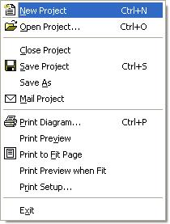
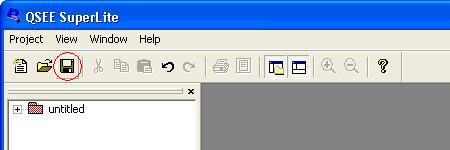
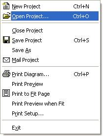
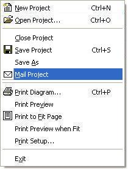

|
|
QSEE SuperLite - Projects
This document provides help information related to the manipulation
of 'Projects' within the QSEE SuperLite environment. A project
forms the basis of a piece of work carried out by the user and allows a
number of related models to be grouped together and saved for later use.
Project are saved on the file-system using a name specified by the user.
Project files generated by QSEE SuperLite use the
.qsee filename suffix.
To return to the main help page click the
back button below -
|
|
Starting a New Project
To start a new project select the "Project | New Project" option from the
main menu (see example below). Alternatively press Ctrl-N on the
keyboard, or click the new project button within the main toolbar. If you
have a project open that has not been saved then you will be prompted about
whether you wish to save the current project prior to creating the new project.
If prompted then click the button appropriate to your needs. Depending on
your particular installation you may be prompted to select a project type
to be created. In this case simply select the project type you wish and
press OK.
e.g. Creating a project using the main menu.

Saving A Project
Once you have created a new project and developed some models you may wish to
save the project for future use. To save a project simply select the
"Project | Save Project" option from the main menu. Alternatively press
Ctrl-S on the keyboard, or click the save project button within the main
toolbar (see example below). The first time you save a project you will be
prompted to enter a filename. If the project has been saved before then it
will be automatically saved using its existing name. If you wish to save
an existing project with a different name use the "Project | Save As" option.
e.g. Saving a project using the toolbar button.

Back To Top
Opening and Closing Projects
Once a project has been created and saved it can be opened at any point in
the future by selecting the "Project | Open Project" option from the main menu
(see example below). Alternatively press Ctrl-O on the keyboard, or click
the open project button within the main toolbar. Select the project to be opened
from the Open File dialogue and click OK. If you have a project open that has
not been saved then you will be prompted about whether you wish to save the
current project prior to opening the new project. If prompted then click
the button appropriate to your needs.
e.g. Opening a project using the main menu.

To close an open project without exiting the QSEE Superlite
environment select the "Project | Close Project" option from the main menu. This
will close the current project and show the initial start-up screen (as when the
application is first started). If the project that is currently open has not
been saved then you will be prompted about whether you wish to save the project
prior to closing. If prompted then click the button appropriate to your
needs.
Mailing Projects
It is possible to e-mail projects directly from within the QSEE Superlite
environment by selecting the "Project | Main Project" option from the main menu
(see example below). Selecting this option will open a new e-mail form with the
project file automatically attached. Type the name of the recipient(s) and press
'send'. The exact behaviour of the email procedure will be dependent upon the
email client software available.
e.g. E-mailing an open project.


To return to the main help page click the button
below -